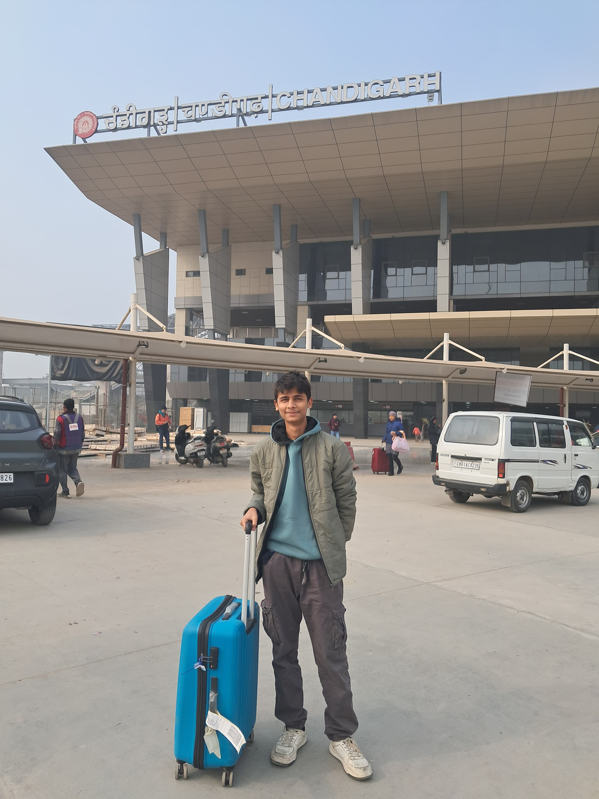
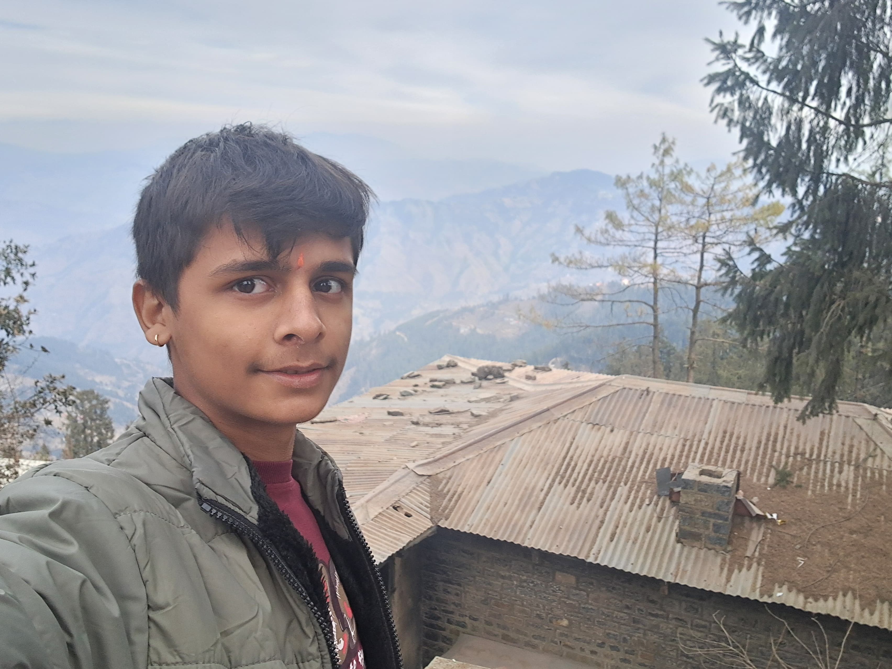

Cold Altitudes
Mountain fog, winter jackets, and the absolute silence of high elevations.
Born on October 8th. I am a wanderer and observer finding 'sukoon' in cold altitudes, quiet transit, and moments away from the noise.
This is my digital travel archive.
Mountain fog, winter jackets, and the absolute silence of high elevations.
Railway stations, heavy luggage, and the peace of moving toward the next destination.
Slowed + reverb Hindi tracks playing through headphones on long journeys.
"waiting on sukoon."X.III ∞ VIII.X

